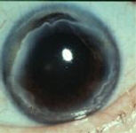

Terrien's marginal degeneration = an uncommon but distinct variety
of marginal thinning of the cornea. It is usually bilateral, although often
asymmetric, and is seen mainly in younger men.

Thinning of the peripheral cornea
without obvious inflammation. |
|